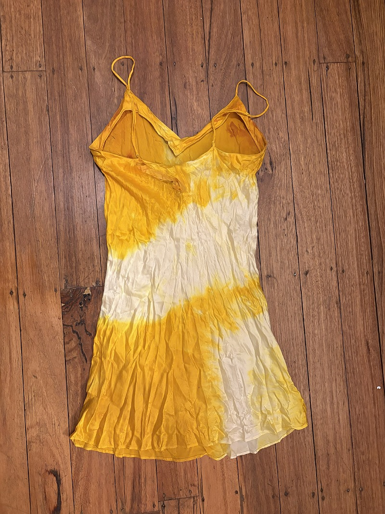

I had heard that turmeric, like cyanotype, is photo-sensitive and can be used to make sun prints. I wanted to try this out on a silk garment, and was already working on repairing a 100% silk night dress for my Brief 1 - Type Specimen. I used this opportunity to test out a method of dying fabric with turmeric. In my submission for this brief, I explained the dying process: "The process for the dying was simple - I simmered a large pot of water and around 4tbsp of turmeric for 10 minutes, then placed my piece into the pot and simmered for an hour, stirring occassionally." I then rinsed the excess turmeric out of the fabric.
This produced a really beautiful and vibrant yellow colour in the fabric. However, I did notice, as I worked on the piece and photographed it in the sun, that the yellow colour was not fading as much, or as quickly as I would need it to for my final piece. I think that by boiling my fabric for an extended period, I was able to set and stabilise the colour. While this is great for clothing that needs to be washed and worn, it was more important for my Copy of a Copy work that I could create clear prints using UV processing. So I decided that I needed to test some other processes for turmeric dying.

